3.6.2 Funcionamiento del modelo Simulation3D
El modelo simulation3D aparece en el entorno 3D representado por el siguiente objeto:
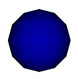
Para poder acceder al control del modelo simulation3D deberemos clicar sobre �l y nos aparecer� la siguiente ventana:
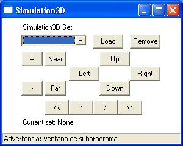
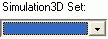
Muestra una lista de todas las Things de tipo simulation3D que hay en el Place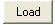
Carga la simulaci�n 3D que hay seleccionada en el campo Simulation3D Set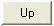
Mueve la simulaci�n hacia arriba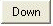
Mueve la simulaci�n hacia abajo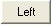
Mueve la simulaci�n hacia la izquierda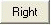
Mueve la simulaci�n hacia la derechaAcerca la simulaci�n hacia nosotros
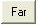
Aleja la simulaci�n de nosotros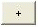
Incrementa el tama�o de la simulaci�n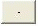
Disminuye el tama�o de la simulaci�n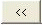
Muestra la primera simulaci�n 3D de la presentaci�n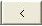
Muestra la anterior simulaci�n 3D de la presentaci�n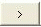
Muestra la siguiente simulaci�n 3D de la presentaci�n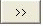
Muestra la �ltima simulaci�n 3D de la presentaci�n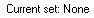
Indica cual es el conjunto de simulaciones 3D que hay actualmente cargado en el modelo